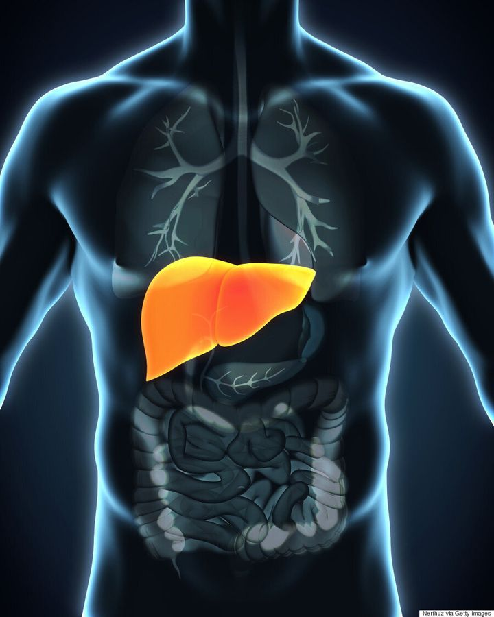

Il détoxifie le sang, produit des protéines importantes pour la coagulation et métabolise les nutriments.
L'hépatite est une inflammation du foie, souvent causée par des infections virales,contact avec du sang infectés, mais aussi par des substances toxiques,
des maladies auto-immunes ou des médicaments.
Il existe plusieurs types d'hépatite, les plus courants étant les hépatites A, B, et C.